第 1 章 概述
操作系统课本
操作系统目标
OS：
- 在计算机用户和计算机硬件之间起中介作用的程序
目标：
- 执行用户程序，使解决用户问题更容易
- 使计算机系统使用方便
- 高效地使用计算机硬件
计算机系统分为四部件：
- 硬件：提供基本的计算资源
- CPU、内存、IO设备
- 操作系统：控制和协调各种应用程序和用户之间的硬件使用
- 应用程序：定义如何使用系统资源来解决用户的计算问题
- 文字处理器，编译器，网络浏览器，数据库系统，视频游戏
- 用户
- 人，机器，其他电脑
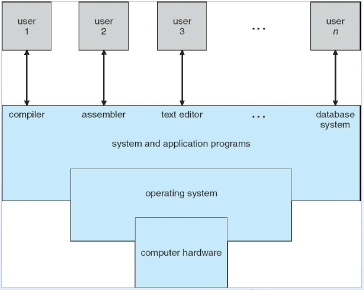
操作系统目标：
- 取决于如何看待
- 用户需要方便、易用和良好的性能。不关心资源的利用
- 但是共享计算机，如大型机或小型计算机，必须让所有用户满意
- 专用系统(如工作站)的用户具有专用资源，但经常使用来自服务器的共享资源
- 掌上电脑资源匮乏，优化了可用性和电池寿命
- 有些计算机很少或没有用户界面，如设备和汽车中的嵌入式计算机
操作系统定义：
一个资源分配器
- 在要求有效和公平使用资源的冲突中作出决定
一个控制程序
- 控制程序的执行，以防止错误和不当使用计算机
没有普遍接受的定义
内核：“在计算机上始终运行的一个程序”
操作系统成长历程：
- 图灵机
- 1936 年末，图灵发表论文解决了一个世纪难题，同时引出了图灵机。它是一种精确的通用计算机模型，能模拟实际计算机的所有计算行为。
- 阿塔纳索夫-贝利计算机（ABC）
- 埃尼阿克计算机（ENIAC）
- 第一台存储程序计算机，使用了冯诺伊曼架构。
- 存储程序计算机（Stored-progeam computer）
- 第一台存储程序计算机（EDSAC）
- 加载用户程序至内存
- 将程序存入rom，出现操作系统最原始的雏型。
- 子程序
- 出现了call、ret指令以及栈的概念，硬件上支持了子程序。
- 子程序库
- 软件上支持了子程序。
- 异常和中断：
- 异常（内部中断）：CPU 自身执行指令时发生的的错误事件。必须具备
- 中断（外部中断）：外部设备向 CPU 发出中断指令。并非必须具备。
- 中断是激活操作系统的手段。
- 共同点：暂停当前指令流的执行，去执行毫无相关的处理程序（另一个指令流，异常/中断处理程序），处理完后返回继续执行当前指令流
- 计算机操作员
- 批处理程序。一次性提交大量计算机指令，集中处理。
- 产生原因：人的操作速度比机器慢太多，非常低效，因此集中处理，减少人的操作，提高效率。机器贵，人便宜，因此提高机器效率至关重要。
- 缺点：计算机利用率提高，人不方便了。
- 监控程序
- 提供效率。
- 操作系统的早期形式。为其它程序提供便利，提高机器效率。批处理系统。
- 作业控制
- 为用户提供方便。
- JCL，作业控制语言。告诉操作系统如何运行程序。
- 脱机输入输出
- 联机 IO ：指作业的 I/O 是联机。作业从输入机到磁带，由磁带调入主存，以至于结果的输出、打印都是由 CPU 直接控制。
- 脱机 IO：指外设不由 CPU 直接控制，主要是由外围计算机与外设打交道，过程是作业通过外围计算机输入到磁带上，当主机需要输入作业时，就把输入带同到主机上，主机从输入带上把作业调入主存，并予以执行，作业完成后，主机负责把结果记录到输出带上，再由外围计算机把输出带上的信息打印输出。
- 假脱机技术：将低速设备与高速设备通过高速设备中的缓存存储器相联，不独占高速设备，使得高速设备变得可共享的一种速度匹配技术。
- 操作系统的出现
- 命令行 (CLI) 接口
- 命令解释器
- 系统调用
计算机系统组织
- 转向操作系统：CPU 转入内核态
- cache 和 buffer 都是存储区
- caching 和 buffer 都是管理存储区的技术
- 设备驱动程序：直接控制外部设备的程序！！！！！！！！！！！！
计算机系统操作
- I/O 设备和 CPU 可以并发执行
- 并发 Concurrent，宏观上同时，微观上是交替的
- 并行 parallel，真正的同时
- 每个设备控制器控制一种特定类型的设备
- 每个设备控制器都有一个本地缓存 buffer
- CPU 在主存和本地缓存间 移动数据
- I/O 是从设备到控制器的本地缓存
- 设备控制器通过产生中断 interrupt 来告知 CPU 其以完成其操作
常见的 Common 中断函数
中断 interrupt：中断必须将控制 转移到 合适的中断处理程序。
中断向量表 interrupt vector：是一个指针表，包含各种设备的中断处理子程序的地址。
对于给定的中断请求，通过中断向量表，可以用唯一设备号来索引，以提供设备的中断处理子程序的地址。陷阱 trap 或异常 exception：错误或用户请求造成的一种软生成中断
驱动操作系统的方式：异常、中断、系统调用
中断处理：
- 分析中断是否发生的方式
- 轮询 polling
- 矢量中断系统 vectored interrupt system
- OS 通过转储寄存器和程序指针 来 保存当前 CPU 的状态
- 独立的代码段 决定 对每种类型的中断 采取的操作
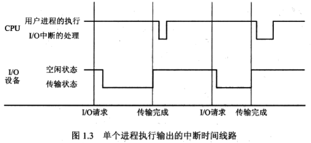
中断与子程序的区别？？：
- 中断是随时发生的，时间不确定
- 子程序则时间确定，跟系统设计顺序有关系，起简化、优化作用
I/O 结构：
I/O 启动之后，控制权仅在 I/O 完成时才返回给用户程序
- Wait 指令使 CPU 空闲，直到下一次中断
- 等待循环 ( 内存访问争用 )
- 一次最多有一个 I/O 请求未完成，不同时 I/O 处理
I/O 启动之后，控制权返回给用户程序，不需等待 I/O 完成
- 系统调用 system call：请求 OS 允许用户等待 I/O 完成
- 设备状态表 Device-status table：包含每个 I/O 设备的条目，如类型、地址、状态
- OS 索引到 I/O 设备表中，以确定设备状态，并修改表条目为了包含中断
存储器结构：
主存 —— 唯一的 CPU 可直接访问的大容量存储介质，特点是 随机存取、易失存储
辅助存储器 secondary storage —— 提供大的非易失性存储容量的主存储器的扩展
硬盘 —— 覆盖有磁性记录材料的硬质金属 rigid metal 或玻璃盘 glass platters
- 硬盘表面逻辑上划分为轨道，轨道又细分为扇区
- 硬盘控制器决定设备和计算机之间的逻辑交互
固态硬盘 —— 比硬盘快，非易失性。多种技术、愈加受欢迎
存储器层级 —— Speed Cost Volatility：
- 缓存 caching —— 将信息复制到更快的存储系统。主存可以看作是辅助存储器的缓存
- 设备驱动 device driver —— 为每个设备控制器管理I/O的设备驱动程序。在控制器和内核之间提供统一的接口
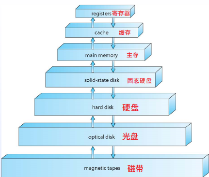
缓存技术 caching：
- cache 是缓冲区，caching 是缓存技术
- 在计算机 (硬件、操作系统、软件) 的许多层次上执行的重要原理 principle
- 正在使用的信息 临时 从较慢的存储复制到较快的存储
查信息时先看 cache 命中与否，不命中则从硬盘中将信息复制到 cache，然后再从 cache 中拿信息 - 缓存空间比存储空间小，这使得 cache 管理是个很重要的设计问题，包括 cache 的大小和替换机制
直接内存访问 Direct Memory Access DMA 结构：
- 用于能够以接近内存速度传输信息的高速 I/O 设备
- 设备控制器直接将数据块从缓冲存储器传输到主存储器，不需要 CPU 的干预
- 每个块只生成一个中断，不是每个字节生成一个中断
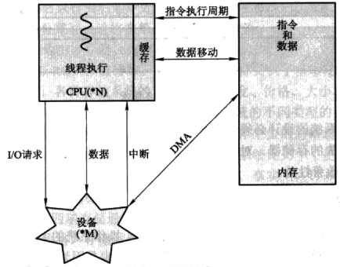
计算机系统体系
大多数系统使用单一多用途 general-purpose 处理器，同时也有专用用途处理器
多处理器 Multiprocessors 系统在使用和重要性方面不断增长
又以 并行 paralled 系统、紧耦合 tightly-coupled 系统 著称
特性
- 快速增长的吞吐量 throughput
- 经济
- 可靠性增强 —— 故障弱化 graceful degradation 和 容错 fault tolerance
两种类型
- 非对称多处理器 Asymmetric Multiprocessing —— 每个处理器被分配特殊任务
- 对称多处理器 Symmetric Multiprocessing —— 每个处理器执行所有任务
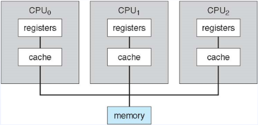
分布式系统：独立的计算机、互联、透明性，共同完成一个任务
集群 clustered 系统
通常通过 存储区域网 Storage-Area Network SAN 进行存储共享
提供高可用性服务，失败后也能幸存
- 非对称集群，有一台机器处于 双机热备 hot-standby 模式
- 对称集群，有多个节点运行应用，相互监督
有些集群用于高性能计算 (HPC, high-performance computing)
- 应用的编写必须使用 并行化 parallelization
使用分布式锁管理 (Distributed Lock Manager, DLM) 去避免操作冲突
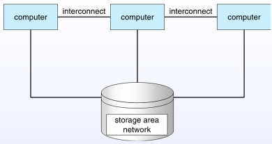
操作系统结构
- 多道程序设计，Multiprogramming (Batch system)，批处理系统。为效率而生
- 单个用户并不能让 CPU 和 I/O 设备一直处于繁忙状态
- 多道程序设计 Multiprogramming 合理组织任务以使得 CPU 总是处于有工可做状态
- 在内存中存储所有作业的一个子集
- 一个作业通过作业调度 job scheduling 被选中和执行
- 当需要等待时 (如 I/O)，OS 切换到另一个任务
- 分时，Timesharing (multitasking)
- 相应时间理应小于 1 秒
- 每个用户至少有一个程序在内存中执行着 -> 进程
- 提供多任务同时执行的能力 -> CPU 调度
- OS 为保证合理的相应时间，有时需通过交换 swapping 来得到，交换时进程被换入内存或由内存换出到硬盘 （使用虚拟内存）
- 虚拟内存运行执行的进程并不完全在内存中
- 进程：程序的执行过程
- 作业、进程、任务：都指一个正在运行着的程序
操作系统操作
中断驱动 (硬件和软件)：
- 硬件被其中一个设备中断
- 软件中断 (异常 exception 或陷阱 trap)
- 软件错误 (例如，除以0)
- 请求操作系统服务
- 其他进程问题包括死循环、进程之间相互修改或操作系统
双模式：
双模式操作允许操作系统保护自己和其他系统组件
用户态 （User Mode）、内核态 （Kernel Mode，Privileged Mode）
模式位由硬件提供
- 提供区分内核态和用户态的方式
- 一些特殊的特权指令仅在内核态下可执行
- 系统调用将模式更改为内核，从调用中返回并将其重置为用户
越来越多的 cpu 支持多模式操作
- 如 虚拟机管理 VMM 模式
用户态转内核态：
- 定时器，防止无限循环/进程占用资源
- 定时器设置为在一段时间后中断计算机。计数器是递减的物理时钟，当计数器为 0 时产生中断时，操作系统设置计数器 (特权指令)
- 在调度进程之前设置定时器，以重新获得超过分配时间的控制或终止程序
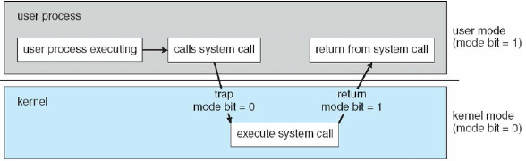
进程管理
资源：相对缺少的东西
继承是正在执行的程序。它是系统中的一个工作单元。程序是一个被动的实体，进程是一个主动的实体。
进程需要资源去完成任务
- 资源：相对缺少的东西。计算机中是 CPU、内存、IO、文件、初始化数据
单线程进程有一个 Program counter，它指定要执行的下一条指令的位置
- 按顺序执行指令，每次执行一个，直到完成
多线程进程每个线程有一个程序计数器
系统有许多进程，一些用户，一些操作系统在一个或多个 cpu 上并发运行
- 通过在进程/线程之间多路复用cpu实现并发
进程
进程是具有一定独立功能的程序关于某个数据集合上的一次运行活动,进程是系统进行资源分配和调度的一个独立单位。每个进程都有自己的独立内存空间，不同进程通过进程间通信来通信。由于进程比较重量，占据独立的内存，所以上下文进程间的切换开销（栈、寄存器、虚拟内存、文件句柄等）比较大，但相对比较稳定安全。
线程
线程是进程的一个实体,是CPU调度和分派的基本单位,它是比进程更小的能独立运行的基本单位.线程自己基本上不拥有系统资源,只拥有一点在运行中必不可少的资源(如程序计数器,一组寄存器和栈),但是它可与同属一个进程的其他的线程共享进程所拥有的全部资源。线程间通信主要通过共享内存，上下文切换很快，资源开销较少，但相比进程不够稳定容易丢失数据。
协程
协程是一种用户态的轻量级线程，协程的调度完全由用户控制。协程拥有自己的寄存器上下文和栈。协程调度切换时，将寄存器上下文和栈保存到其他地方，在切回来的时候，恢复先前保存的寄存器上下文和栈，直接操作栈则基本没有内核切换的开销，可以不加锁的访问全局变量，所以上下文的切换非常快。
- 创建和删除用户进程
- 系统进程挂起和恢复进程
- 为进程同步提供机制
- 为进程通信提供机制
- 为死锁处理提供机制
内存管理
要执行一个程序，所有 (或部分) 指令及数据必须在内存中
内存管理决定内存中的内容以其存在时间
- 优化 CPU 利用率和计算机对用户的响应
内存管理活动：
- 记录当前正在使用内存的哪些部分以及由谁使用
- 决定将哪些进程 (或其中的一部分) 和数据移入和移出内存
- 据需要分配和释放内存空间
存储管理
OS 提供了统一的、逻辑的信息存储视图：
- 文件：逻辑存储单元的抽象物理属性
- 每个媒体都又设备驱动 (磁盘设备、磁带设备)
- 多种属性如访问速度、容量、数据转换、访问方法（随机访问、顺序访问）
文件系统管理：
- 以目录组织文件
- 对大多数系统的访问进行控制，以确定谁可以访问什么
- OS 活动
- 创建和删除文件和目录
- 操作文件和目录的原语
- 将文件映射到辅助存储
- 将文件备份到稳定的 (非易失性 non-volatile) 存储介质上
大容量管理 Mass-Storage：
- 硬盘通常存储不适合放在主存的数据 / 或需要长期保存的
- 适当的管理尤为重要 -> 整个计算机运行速度取决于磁盘子系统及其算法
- OS 的活动：空间管理、存储分配、硬盘调度
- 有些存储可以不用速度很快：
第三存储 —— 磁带 magnetic tape、光盘 optical
但同样需要被 OS、应用 管理
种类介于 WORM (write-once, read-many-times) 和 RW (read-write)
将数据 “A” 从磁盘迁移到寄存器：
- 硬盘 -> 主存 -> 缓存 -> 寄存器
- 分布式环境状况会更复杂，一个数据可能有多个副本
输入输出子系统 I/O Subsystem：
- 操作系统的一个目的是向用户隐藏硬件设备的特性
- I/O的内存管理，包括
- 缓冲 buffering (在传输数据时临时存储数据)
- 缓存 caching (将部分数据存储在更快的存储器中以提高性能)
- 假脱机 spooling, Simultaneous Peripheral Online Operation, 外围设备同时联机操作 (一个作业的输出与其他作业的输入的重叠)
- 通用设备驱动器接口
- 用于特定硬件设备的驱动程序
保护与安全
保护 Protection：
- 一些机制：操作系统规定了 “控制进程” 或 “用户” 对资源的访问
安全 Security：
- 防御系统内部和外部的攻击
- 攻击定义范围广泛，包括拒绝服务 denial-of-service，蠕虫 worms,，病毒 ruses，身份盗窃 identity theft，盗窃服务 theft of service
系统通常首先区分用户，以确定谁可以做什么：
- 用户标识 (用户id、安全id) 包括名称和关联的编号，每个用户一个
- 然后将用户 ID 与所有文件相关联，确定该用户的进程访问控制
- 组标识符 (组ID) 允许定义一组用户并管理控件，然后还可以与每个进程、文件相关联
- 权限升级允许用户更改为具有更多权限的有效 ID
计算环境
传统计算环境：
- 独立通用机器
- 但是，由于大多数系统与其他系统相互连接(即,互联网)
- 门户 Portals 提供对内部系统的web访问
- 网络计算机 (client) 就像Web终端
- 移动计算机 laptop 通过无线网络相互连接
- 网络变得无处不在——甚至家庭系统也使用防火墙来保护家庭计算机免受网络攻击
移动计算环境：
- 手机，平板电脑 tablets
分布式：
CS：
P2P：
虚拟化：
云计算：
实时嵌入式系统 Real-Time Embedded Systems：
开源操作系统
第 2 章 操作系统结构
本章要点：
- 描述操作系统向用户、流程和其他系统提供的服务
- 讨论构建操作系统的各种方法
- 解释操作系统是如何安装和定制的，以及它们是如何引导的
操作系统服务
OS 为程序和用户提供执行程序和服务的环境：
用户界面 —— 几乎所有的操作系统都有一个用户界面(UI)。命令行(CLI)、图形用户界面(GUI)、批处理
程序执行 —— 系统必须能够将程序加载到内存中并运行该程序，正常或异常(指示错误)结束执行
I/O 操作 —— 正在运行的程序可能需要I/O，这可能涉及文件或I/O设备
文件系统操作 manipulation —— 文件系统特别有意义。程序读写文件和目录，创建和删除文件，搜索文件，列出文件信息，权限管理
通信 —— 进程可以在同一台计算机上或通过网络在计算机之间交换信息。通信可以通过共享内存或消息传递(操作系统移动的数据包) 进行
错误检测 Error detection —— 操作系统需要不断检测到可能的错误：
- 可能发生在 CPU 和内存硬件中，在 I/O 设备中，在用户程序中
- 对于每种类型的错误，OS 应该采取适当的行动来确保正确和一致的计算
- 调试工具可以极大地提高用户和程序员有效使用系统的能力
多用户系统通过资源共享提高效率：
- 资源分配 Resource allocation —— 当多个用户或多个作业同时运行时，必须为每个用户或作业分配资源。资源包括 CPU Cycles、主存、文件存储、IO 设备
- 统计 Accouting —— 记录哪些用户使用了多少和什么类型的资源
- 保护与安全 —— 信息所有者对信息使用的控制，并发进程不能相互干扰
- 保护即确保对系统资源的所有访问是受控的
- 安全包括保护外部 IO 设备不受非法访问，并记录所有非法闯入的企图
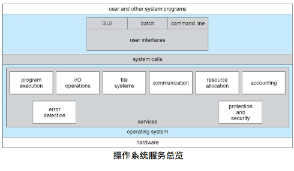
用户操作系统接口
CLI 命令行接口
- 有的在内核中实现，有的在系统程序中实现
- 有的实现多种，比如 Linux 中有多种不同的 Shell 可供用户选择
- 主要是捕获 fetches 用户的命令并执行
- 命令有的是内置命令，有的是程序的名字，后者不需修改 shell 的本身特性
GUI 图形用户接口
- 通常使用鼠标、键盘、显示器进行交互
- icons 代表了文件、程序、操作
- 不同鼠标按键造成不同动作，提供信息、选择、执行方法、打开 directory/folder
- 发明于 Xerox PARC
现在许多操作系统同时配备 CLI 和 GUI
- Windows 匹配了 “command” shell
- Mac OS，”Aqua” GUI 和 UNIX 内核的 shell
- Unix 和 Linux 提供可选的 GUI，如 CDE、KDE、GNOME
触屏接口
- 没有鼠标
- 操作和选择基于手势 gestures 的输入
- 用虚拟键盘进行文本键入
- 声控
系统调用
系统调用 system call，操作系统提供的程序接口。
系统调用大多数以高级语言调用。比起直接调用，通过高级语言的 API 进行调用也更常见
三种最常见的 APIs：
- Win32 API for Windows
- POSIX API for POSIX-based systems
- Java API for JVM
将一个文件内容复制到另一个文件涉及的系统调用
- Source File -> Destination File
- 获取输入文件名
获取输出文件名屏幕输入提示 接收输入
打开输入文件屏幕输入提示 接收输入
创建输出文件文件不存在则放弃
循环读入输入文件输出到输出文件直到读完文件存在则放弃
关闭输出文件
向屏幕输出完成指令
正常终止
系统调用实现
通常，一个整数对应着某个系统调用，系统调用接口维护一张索引表
系统调用接口 调用 在 OS 内核中预设的系统调用，返回系统调用的状态和返回值
调用者不需了解系统调用的具体实现方式
- 只需遵守 API 以及了解 OS 会做什么返回什么
- 有了API，大多数 OS 接口对程序员是隐藏细节的：被运行时支持库（编译器内建函数库）所管理
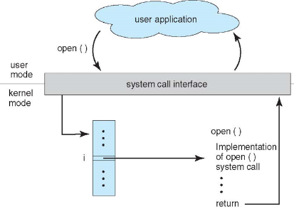
系统调用传参 Parameter Passing
- 通常，需要 提供 比所需的系统调用识别符更多 的信息，这些信息的具体类型、数量因 OS、调用而有所不同
- 三种传参方式：
- 最简单：通过寄存器传参。不过有时参数比寄存器多
- 参数存在块、表、内存中，块内存地址通过寄存器传参。Linux 和 Solaris 是这样实现的
- 参数被放在(压入) 堆栈中，在系统调用中被 OS 从堆栈中弹出
系统调用类型
进程控制类：
创建 create 进程、终止 terminate 进程
结束 end、放弃 abort
加载 load、执行 execute
获取进程属性 attributes、设置进程属性
等待时间
等待事件、标记事件
分配、释放内存
出错转储内存情况
单步调试
锁 Locks，用于管理共享数据的访问
文件管理类：
- 创建文件、删除文件
- 打开、关机文件
- 读、写、重定位 reposition
- 获得、设置文件属性
设备管理类：
请求 request 设备、释放 release 设备
读、写、重定位 reposition
获得、设置设备属性
逻辑上的 附加 attach、分离 detach 设备
信息维护 maintenance 类：
- 获得 / 设置 时间 / 日期
- 获得 / 设置 系统数据
- 获得 / 设置 进程、文件、设备属性
通信：
创建 / 创建 通信连接
发送 / 接受 信息
共享内存模型 -> 创建和获取 gain 对内存的访问权限
传输状态信息
附加 / 分离 设备
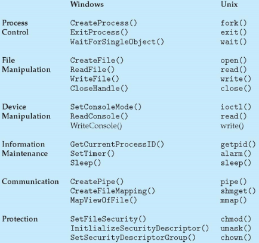
例子：MS-DOS
- 单任务
- 系统启动时即调用 Shell
- 执行程序不创建进程
- 单一内存空间
- 程序载入内存，重写内存除了内核
- 程序退出 即 Shell 重载
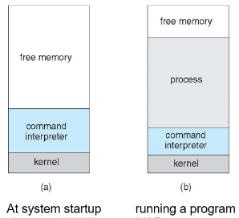
例子：FreeBSD
Unix 的变体。多任务
用户登录 -> 从用户所选的 shell 进行执行
Shell 执行
fork()系统调用去创建进程- 执行
exec()将程序载入进程 - Shell 等待进程终止或继续执行用户命令
- 执行
进程退出：code=0 无错，code>0 错误代码
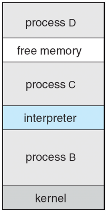
系统程序
系统程序提供了一个便利的环境以便程序开发、执行，系统程序可分为：
- 文件操作 manipulation
- 状态信息：日期、时间、内存、磁盘… （一些系统实现了注册表 registry 将配置信息存储在磁盘中）
- 文件修改
- 程序语言支持
- 程序装入和执行
- 通信：进程、用户、计算机系统之间创建虚拟连接的机制 mechanism
- 后台设备
- 应用程序
大多数用户可以看到的 OS，都是由应用和系统程序而不是系统调用决定的。
操作系统设计与实现
设计和实现操作系统是尚未解决的，但现今的一些方法 approaches 被证实是成功的。
不同 OS 的内部结构可能差别很大
通过制定目标和规范 specifications 来开始设计
用户目标：OS 理应是使用方便、易学、可靠、安全、快速的
系统目标：OS 理应是容易设计 / 实现 / 维护、灵活 flexible 、可靠、容错、高效的
政策 Policy 与 策略 Mechanism：
- Policy：做什么。
- Mechanism：怎么做。
- 例如，定时器结构是一种 CPU 保护的机制，但对特定用户将定时器设置成多长时间是个策略问题
- 因为没有两个设备的配置是完全相同的，每个不同配置的设备都想要最适合自己的操作系统。机制和策略的分开描述，提供了一个灵活的制度，保证了系统能够很容易地被修改，即政策可以随意改变但机制不能改变。
OS 实现：
- 早期的 OS 以汇编语言 assembly language 实现
随后是系统设计语言比如 Algol, PL/1
现在是 C, C++ - 但实际上，如今是混合语言
底层是汇编
主体是 C
系统程序是 C、C++，或者脚本语言例如 PERL、Python、Shell - 更高级的语言尽管容易实现硬件移植，但是也更慢
- 仿真/模拟 emulation 可让 OS 运行在非原生硬件
操作系统结构
简单结构
如 MS-DOS，编写的目的是在最少的空间内提供最多的功能。
未分成模块。虽然 MS-DOS 有一定的结构，但是它的接口和功能级别并没有很好地分离
只有设备管理、文件管理，无 CPU 管理
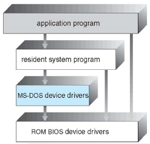
不简单结构
如 UNIX，由于受到硬件功能的限制，原来的 UNIX 操作系统的结构很有限。
UNIX 操作系统由两个可分离的部分组成：系统程序、内核
内核：由系统调用接口之下和物理硬件之上的所有内容组成；
提供文件系统、CPU调度、内存管理等操作系统功能；这种单一式结构使 UNIX 难以增强
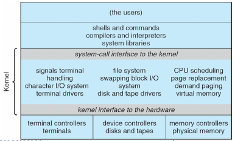
分层结构 Layered Approach
操作系统分成许多层，每一层都建在较低的层上，底层 ( 第 0 层 ) 为硬件，最高 ( N 层 ) 是用户界面
与模块化对比，分层结构每个层只使用较低层的功能 (操作) 和服务
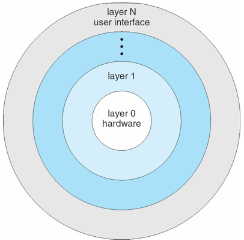
微内核
缩小操作系统的内核，尽量把非基本功能放到核外。
微内核主要功能：使客户程序和运行在用户空间的各种服务之间进行通信。好处 Benefits：容易扩展微内核、容易将操作系统移植到新的体系结构、可靠 (内核模式下运行的代码更少) 、安全
缺点 Detriments：用户空间 -> 内核空间 通信的性能开销
微内核例子： Mach。 Mac OS X Kernel 部分基于 Mach
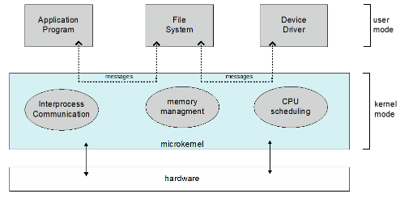
模块
- 许多现代操作系统实现了 可加载内核模块 loadable kernel modules
- 使用了面向对象 object-oriented 的实现 approach
- 每个核心组件 core component 是分离的 separate
- 每个部分通过已知接口与其他进行通信
- 每个部分需要在内核中加载
- 与分层结构很像但是更灵活
- 许多现代操作系统实现了 可加载内核模块 loadable kernel modules
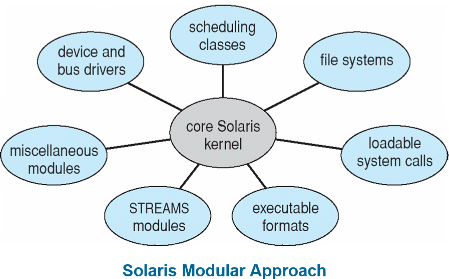
杂交系统 hybrid
大多数现代操作系统并非一个单纯模型
结合了多种方法去解决 address 性能、安全、需求
Linux 和 Solaris 内核位于内核地址空间中，所以是单片的 monolithic，结合用于动态加载功能的模块
Windows 几乎是单片的，结合微内核以为实现不同子系统特性
Mac OS 由 Mach 微内核和 BSD Unix 部件组成的内核，以及 I/O 工具包 kit 和可动态加载的模块（称为内核拓展）。Cocoa 是编程环境
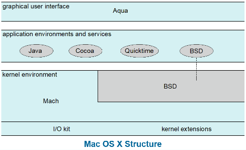
iOS，在 Mac OS X 的基础上架构，添加了一些功能 functionality
不能原生运行 Mac OS X 应用，但可运行在不同的 CPU 架构上。
从上到下分 4 层：
Cocoa Touch：提供开发 apps 的 Objective-C API
Media services：负责图形、音频、图像
Core services：负责云计算、数据库
Core OS：核心操作系统，基于 Mac OS XAndroid，由 Open Handset Alliance (mostly Google) 开发。
与 iOS 类似的结构栈。基于 Linux 内核修改，提供进程、内存、设备驱动管理，增加电源管理
运行时环境包括核心库和 Dalvik 虚拟机
Apps 以 Java + Android API 开发。Java class 文件被编译成 Java 字节码后能在 Dalvik VM 上执行
库包括了 webkit 框架、数据库 SQLite 框架，多媒体 multimedia、小型的 C 库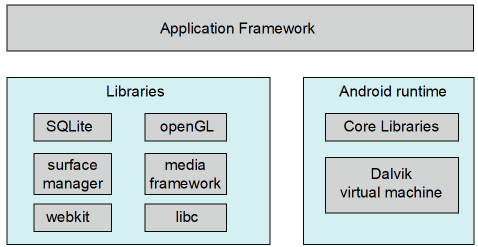
操作系统调试 Debugging
OS 生成包含错误信息的日志文件 log files
应用程序的错误运行会产生核心转储 core dump 文件
操作系统故障会生成包含内核内存的崩溃转储 crash dump 文件
除了崩溃之外，性能调优还可以优化系统性能：
有时使用活动的跟踪列表 trace listings ，记录下来进行分析
分析 profiling 是对指令指针进行周期性抽样 periodic sampling，以寻找统计趋势
DTrace 工具：
- FreeBSD、Mac OS、Solaris 中可以显示生产系统的实时指令
- 当在提供程序中执行代码时，探测触发，捕获状态数据并将其发送给这些探测的使用者
操作系统生成 Generation
操作系统被设计成可在任何一类机器上运行
必须为每个特定的计算机站点配置系统
SYSGEN 程序获取有关硬件系统具体配置的信息
- 用于构建编译特定系统的内核 或 系统调优
- 通用的代码比一个通用的内核更有效
系统引导 Boot
- 当加电时，计算机从一个预先定义内存位置启动
- 固件 ROM ( 或 EEPROM ) 用于保存初始引导代码，引导程序，例如 BIOS，可自检，启动 CPU、设备控制器、内存。
- 具体的操作系统是保存在磁盘上的。此时，引导程序从磁盘的固定位置 ( 0 区块，MBR )，读取整块的信息到内存 (硬盘分区表、活动分区)，然后从硬盘中载入 OS 到内存。
- Booting —— 通过载入内核启动计算机
- Bootstrap program —— 存在 ROM 中的启动代码能定位内核、将其载入内存、执行之
为什么要分成若干个过程？？？？？ 模块化 决策化为步骤
第 3 章 进程
本章目标：
- 介绍过程的概念 —— 一个正在执行的程序，它是所有计算的基础
- 描述进程的各种特性，包括调度、创建和终止以及通信
- 探讨使用共享内存和消息传递的进程间通信
- 描述客户机-服务器系统中的通信
进程概念
操作系统执行大量程序：
- jobs：批处理系统
- user programs / tasks：分时 Time-shared 系统
- ps: 课本中将 job、process 、task 混合使用
进程：
- 正在执行中的程序 / 一个程序的执行过程 （必须顺序执行）
- 有多个部分
- 程序代码， text section
- 当前活动：包括 程序指针 program counter，进程寄存器
- 栈，存储临时数据：函数参数，返回地址，局部变量
- 数据段 data section：全局变量
- 堆：存储动态申请的内存
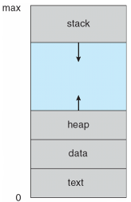
程序是存储在磁盘上的被动 passive 实体 (可执行文件)，进程是活动 active 的
当可执行文件装入内存时，程序变成进程
通过GUI鼠标点击、命令行输入其名称等方式启动程序的执行
一个程序可以是多个进程考虑多个用户执行同一个程序
进程状态：
- new：进程被创建
- running：指令被执行
- waiting：进程等待事件触发 occur
- ready：进程等待处理器分配 assigned
- terminated：进程完成执行。进程等待 OS 资源回收
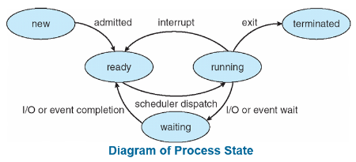
进程控制块 Process/Task Control Block，PCB：
- 进程状态 —— 运行、等待 …
- 程序计数器 —— 下一步执行指令的位置
- CPU 寄存器 —— 所有以进程为中心的寄存器的内容
- CPU 调度信息 —— 优先级 priorities，调度队列指针
- 内存管理信息 —— 分配给进程的内存
- 会计 Accounting 信息 —— CPU 使用，时钟时间经过自启动，时间限制
- I/O 状态信息 —— I/O 设备分配给进程，打开文件列表
CPU 切换进程：
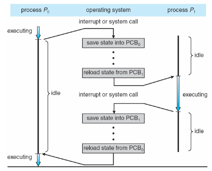
线程 Thread：
程序：为完成某种功能的有序指令序列
在此之前，进程都是单线程的
考虑在每个进程中使用多个程序计数器，多个位置可同时被执行
存储线程细节，多个程序计数器于 PCB
比起操作系统创建更多的进程，一个进程创建多个线程更有利于解决并发处理问题
更多的在第 4 章
进程调度
最大化 CPU 使用 —— 在 CPU 上快速切换进程进行分时
进程调度程序从可用进程中选择要在CPU上执行的下一个进程
维护进程的调度队列 (进程在各种队列之间迁移)：
- 作业队列 —— 系统中所有进程的集合
- 就绪队列 —— 驻留在主内存中的所有进程的集合，准备好并等待执行
- 设备队列 —— 等待 I/O 设备的一组进程
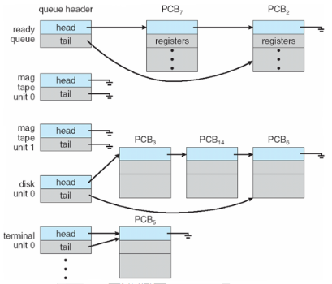
进程调度图示：
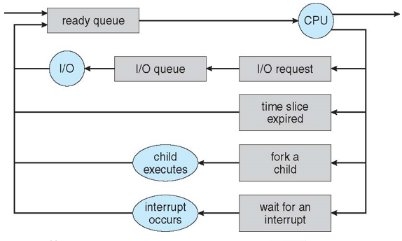
调度程序 schedulers：
调度即选择，选择下一个进程到 CPU 执行
短期调度 short-term scheduler （CPU scheduler）
- 选择接下来应执行的进程并分配 CPU 资源
- 有时是系统中唯一的调度程序
- 被执行得十分频繁
长期调度 long-term scheduler （Job scheduler）
- 选择应该将哪些进程放入就绪队列
- 调用不频繁
- 控制多道程序的程度 degree of multiprogramming
中期调度 medium-term scheduler
添加用于降低多道程序设计的程度
执行 Swapping —— 从内存中删除进程，将其存储在磁盘上；从磁盘中带回进程以继续执行
决定哪些程序临时存储在硬盘
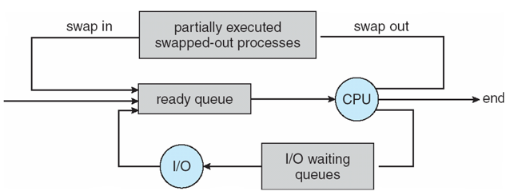
进程可被描述成
- I/O-bound 进程 —— 使用 IO 远多于 CPU
- CPU-bound 进程 —— 使用 CPU 远多于 IO
- 将进程分类，有利于将进程搭配进行，提高系统效率
移动操作系统中的多任务：
上下文切换 context switch：
当 CPU 切换到另一个进程时，系统保存旧进程的状态，并通过上下文切换转到新进程加载的状态
PCB 中表示的过程的上下文
上下文切换时间是系统开销
切换时系统没有做任何有用的工作
OS、PCB 越复杂，上下文切换的开销越大
时间取决于硬件支持：一些硬件在每个 CPU 提供多组寄存器，以便多个上下文一次加载
进程操作
操作：
- 进程创建
- 进程撤销
- …
进程创建：
父进程创建子进程，形成了一个进程树
- 第一个进程：操作系统启动时，创建 0 号进程，填入进程控制块
通常，通过进程标识符 (pid) 标识和管理进程
资源共享选项
- 父子共享所有资源
- 子共享父的部分资源
- 父子进程不共享资源
执行期权 execution options
- 父子进程并行执行
- 父等子进程终止
地址空间
- 父进程的子副本
- 子进程加载了一个程序
UNIX 为例
fork()系统调用，创建新进程，将父进程的内存地址空间复制一份给子进程- copy 写时复制，并不真的复制
exec()系统调用，在fork()执行后用于替换进程的内存空间为另一新程序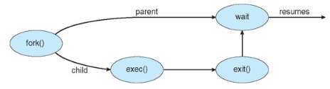
进程终止：
- Process 执行最后一条语句，然后使用
exit()系统调用请求操作系统删除它。- 将状态数据从子节点返回给父节点 （通过
wait()） - 进程资源由操作系统分配
- 将状态数据从子节点返回给父节点 （通过
- 父进程可以使用
abort()系统调用 终止子进程的执行。这样做的原因:- 子进程已超出分配的资源
- 不再需给子进程分配任务
- 父进程正在退出，如果父进程终止，操作系统不允许子进程继续
- 有些 OS 不允许子进程在父进程终止后存在。若一个进程终止，那其子进程也必须终止。
- 级联终止 cascading termination。所有子女、孙辈等均被终止。
- 终止由操作系统发起。
- 如果没父进程等待 (没有调用wait())，那么子进程就是僵尸进程 zombie
- 如果父进程在未调用 wait 的情况下终止，则子进程为孤儿进程 orphan
进程间通信
系统中的进程可是独立的，也可是协作的
协作进程可以影响或被其他进程影响，包括共享数据
进程协作的理由
- 信息共享
- 计算加速 computation speedup
- 模块化 modularity
- 遍历
两种 IPC (interprocess communication) 模型
消息传递
- 进程通信和同步其操作的机制
消息系统——进程之间的通信不依赖于共享变量
IPC 工具提供两种操作：发送(消息)接收(消息)
消息大小是固定的或可变的 - 消息传递需要建立链接
如何建立联系?
一个链接可以与两个以上的进程关联吗?
每对通信进程之间可以有多少个链接?
一个链路的容量是多少?
链接所能容纳的消息大小是固定的还是可变的?
链接是单向的还是双向的? - 通讯链路的实现：
物理上
共享内存
硬件总线
网络
逻辑上
直接或间接
同步 synchronous 或异步 asynchronous
自动或显式缓冲 - 同步 —— 需要等待，是有条件的等待
- 进程通信和同步其操作的机制
共享内存
希望通信的进程之间共享的内存区域
通信是由用户进程控制的，而不是由操作系统控制的。
提供一种机制，允许用户进程在访问共享内存时同步其操作。
第 5 章详细讨论了同步。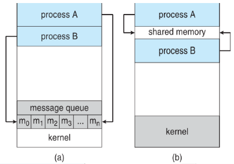
生产者消费者问题 producer-comsumer：
- 协作流程的范例 —— 生产者进程 生成 消费者进程 使用的信息
- 无边界缓冲区 unbounded-buffer 对缓冲区的大小没有实际的限制
- 有界缓冲区 bounded-buffer 假设有一个固定的缓冲区大小
直接通信：
- 进程间必须显式地标识对方
send(P, message) / receive(P, message) - 通信链接的特性
- 链接是自动建立
- 一个链接关联一对进程的通信，每对进程仅一个连接
- 链接是双向，但通常是单向的
间接通信：
- 从邮箱 (也称为端口) 定向和接收消息
- 每个邮箱都有一个唯一的 id
- 进程只有在共享邮箱时才能通信
- 通信链接的特性
- 仅当进程共享公共邮箱时才建立链接
- 一个链接可能关联很多进程。每对进程可能共享许多通信链接
- 链接可是单 / 双向
- 操作
- 创建一个新的邮箱 (端口)
- 通过邮箱收 / 发消息 （原语 primitives：
send(A, message) / receive(A, message)，A 是邮箱） - 摧毁邮箱
- 多用户共享邮箱的解决
- 仅允许至多两个进程使用链接
- 同一时间仅允许一个进程接收信息
- 系统随意选择接收者，同时发送者会收到回馈谁是接收者
同步 synchroniztion：
消息传递可以是阻塞的，也可以是非阻塞的
阻塞 blocking 又称为同步的 synchronous：分为阻塞式发送、阻塞式接收
非阻塞 non-blocking 又称异步的 asynchronous ：分为异步发送、异步接收
发送和接收都是阻塞的，称之为会合的 rendezvous
缓存 Buffering：
- 零缓冲 —— 发送方必须等待接收方
- 有限容量 Bounded capacity
- 无限容量
*IPC系统的例子
POSIX：
- POSIX —— 类 UNIX 厂家遵循的标准
- 进程首先创建共享内存段
lshm_fd = shm_open(name,O CREAT | O RDWR,0666);或者打开现有的共享内存段 - 设置对象的大小
ftruncate(shm_fd, 4096); - 现在可向共享内存段中写东西
sprintf(shared memory, "something");
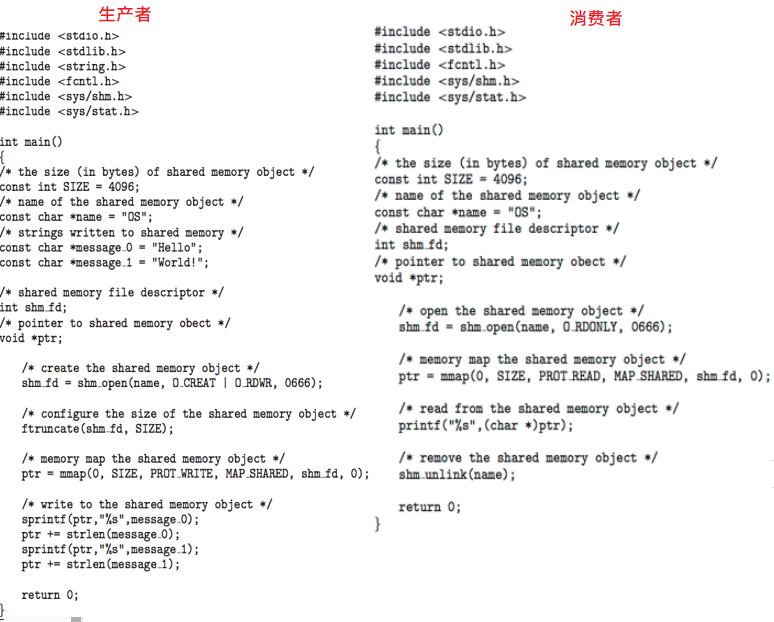
Mach 的通信是基于消息的：
- 每个系统调用都是消息
- 每个任务创建时有两个邮箱：Kernel、Notify
- 消息传输只需要三个系统调用
msg_send()、msg_receive、msg_rpc() - 用于通信的邮箱，通过
port_allocate进行发送和接收是灵活的，如若邮箱满了可选择- 无限等待
- 至多等 n 毫秒
- 立即返回
- 临时缓存消息
Windows 的消息传递中心经由 高级本地过程调用 (adavanced local procedure call，LPC) 设备：
- 只有在同一系统的进程间才工作
- 使用端口 (如 mailboxes) 来建立、维护通信信道
- 通信工作如下
- 客户端打开子系统端口对象的句柄
- 客户端发送连接请求
- 服务端创建两个私有连接端口，返回其一的句柄给客户端
- 客户端和服务器通过相应的端口发送消息 / 回调，以及接受回应
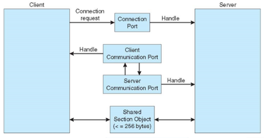
C-S 系统中的通信
Sockets：
- 套接字被定义为用于通信的端点
- 连接基于 IP+Port，以及一对 Socket
- 1024 以下的端口都用于标准服务
- 特殊IP地址127.0.0.1 (环回地址)，指正在运行进程的系统
Remote Procedure Calls，RPC：
抽象网络系统上进程之间的过程调用 -> 使用端口进行服务区分
存根 stubs —— 实际上是客户端用代理的方式在服务端上调用
客户端通过代理封包 marshalls 参数，服务端接收信息，解包，执行调用
Windows 上的 RPC 被以 Microsoft Interface Definition Language (MIDL) 形式编写编译
通过内部数据表示 External Data Representation (XDL) 来解释不同体系的数据表示 （比如大端、小端）
远程通信比本地通信有更多的故障场景 （消息是精确地传递一次，实际上不是最多一次）
操作系统通常提供了一种 媒介 rendezvous (or matchmaker) 服务来连接客户端和服务端
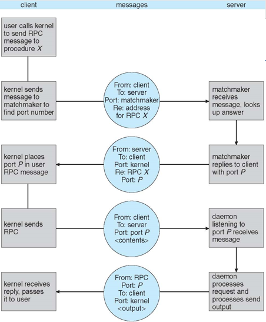
Pipes：
- 充当两个进程通信的管道
- 存在的问题
- 通信是双工 / 单工？
- 若双工，是半双工还是全双工？
- 进程间是否必须存在关系 (如父子进程)
- pipes 可用于网络通信吗？
- 普通管道 —— 不能从创建它的进程外部访问。通常，父进程创建一个管道并使用它与它创建的子进程通信。
- 适合用在典型的生产者-消费者模型：生产者写到一端 (管道的写端)使用者从另一端读 (管道的读端)。因此，普通管道是单向的
- 需要通信过程之间的父-子关系
- Windows 称之为匿名管道
- 命名管道 named pipes —— 可以在没有父-子关系的情况下访问。
- 比普通管道更强大
- 沟通是双向的
- 在通信过程之间不需要父子关系
- 几个进程可以使用命名管道进行通信
- 在UNIX和Windows系统上都提供
Remote Method Invocation （Java）：
- Java 运行在 JVM 之上
- 实现了 Serializable 接口的对象可以通过网络传递
第 4 章 线程
目标：
- 介绍线程的概念 —— 构成多线程计算机系统基础的 CPU 利用率的基本单位
- 讨论 Pthreads、Windows 和 Java 线程库的 api
- 探索几种提供隐式线程的策略
- 检查与多线程编程相关的问题
- 介绍 Windows 和 Linux 中对线程的操作系统支持
概述
动机 motivation
- 大多数现代应用程序都是多线程的
- 线程在应用程序中运行
- 应用程序的多个任务可以由单独的线程实现
- 更新显示
- 获取数据
- 拼写检查
- 响应网络请求
- 进程创建是重量级的，而线程创建是轻量级的
- 可以简化代码，提高效率吗
- 内核通常是多线程的
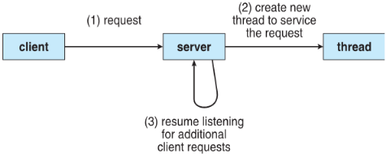
好处 benefits
- 响应性 responsiveness —— 如果进程的一部分被阻塞，可能允许继续执行，对于用户界面尤其重要
- 资源共享 —— 线程共享进程资源，比共享内存或消息传递更容易
- 经济 economy —— 比进程创建更便宜，线程切换比上下文切换开销更低
- 可伸缩性 scalability —— 流程可以利用多处理器体系结构
多核编程
多核或多处理器系统给程序员带来压力，挑战包括
- 可并行活动的划分
- 平衡分配
- 数据分割
- 数据依赖
- 测试和调试
并行 parallelism 意味着一个系统可以同时执行多个任务
并发 concurrency 支持多个正在进行的任务
- 单处理器 / 核心，则是提供并发的调度程序
并行性的类型
- 数据并行性 —— 将相同数据的子集分布在多个核上，每个核上执行相同的操作
- 任务并行性 —— 跨内核分配线程，每个线程执行唯一的操作
随着线程数量的增长，对线程的体系结构支持也在增长
CPUs 有核心，也有硬件线程
考虑 Oracle SPARC T4，它有 8 个内核，每个内核有 8 个硬件线程
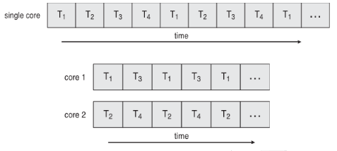
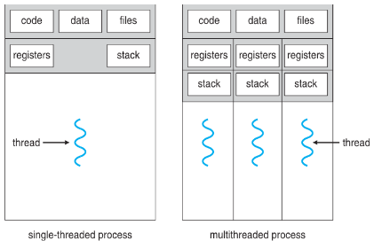
多线程模型
用户线程 —— 由用户级线程库完成的管理 （线程库）
- POSIX Pthreads
- Windows threads
- Java threads
若 JVM 运行在 Windows 上，创建线程时 JVM 会调用 Win32 执行线程的创建
内核线程 —— 由内核支持
多对一 Many-to-One 模型
- 许多用户级线程映射到单个内核线程
- 一个线程阻塞导致所有线程阻塞
- 多个线程不能在 muticore 系统上并行运行，因为一次只能有一个线程在内核中
- 目前很少有系统使用这个模型
- 例子：Solaris 绿色线程、GNU 轻便线程
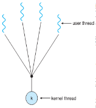
一对一 One-to-One 模型
每个用户级线程都映射到内核线程
创建用户级线程将创建内核线程
并发性比多对一要多
每个进程的线程数有时会因为开销而受到限制
例子：Windows、Linux、Solaris 9 and later
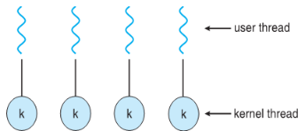
多对多 Many-to-Many 模型
- 允许将多个用户级线程映射到多个内核线程
- 允许操作系统创建足够数量的内核线程
- Solaris 9 之前的版本
- 带有 ThreadFiber 包的窗口
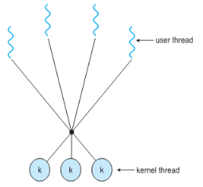
两级 Two-level 模型
- 类似于 Many-to-Many，只是它允许将用户线程绑定到内核线程
- 例子：IRIX、hp - ux、Tru64 UNIX、Solaris 8及更早版本
线程库
线程库为程序员提供了用于创建和管理线程的 API
两种主要的实现方法
- 库完全在用户空间中
- 操作系统支持的内核级库 (即是操作系统)
Pthreads
- 一个用于线程创建和同步的POSIX标准 (IEEE 1003.1c) API，可提供用户级或内核级线程。
- 是一种规范 specification，并非实现
- API 指定线程库的行为，实现取决于线程库的开发
- 常见的 UNIX 操作系统 (Solaris、Linux、Mac OS X)
Windows Threads
Java Threads：
- Java 线程都被 JVM 管理。通常使用底层 OS 提供的线程模型实现
- 通过继承
Thread类或实现Runnable接口，来创建 Java Threads
隐式 implicit 线程
随着线程数量的增加，程序正确性越来越难用显式线程实现，
由编译器和运行时库 (而不是程序员) 创建和管理线程变得有必要。
三种方法探索：
线程池
- 池化技术的一种
- 使用现有线程比临时创建新线程响应快
- 允许将应用程序中的线程数绑定到池的大小
- 将要执行的任务与创建任务的机制分开，可以使用不同的策略来运行任务。
任务可以定期运行 - Windows API 支持线程池
OpenMP
在共享内存环境中提供对并行编程的支持
标识并行区域 —— 可以并行运行的代码块
OpenMP 采用 fork-join的执行模式。开始的时候只存在一个主线程，当需要进行并行计算的时候，派生出若干个分支线程来执行并行任务。当并行代码执行完成之后，分支线程会合，并把控制流程交给单独的主线程。
中央调度 Grand Central Dispatch
苹果 Mac OS X、iOS 使用，接管线程管理的大部分细节
允许识别代码平行部分，平行块代码形如
^{ 代码 }块代码放置在调度队列 dispatch queue，队列弹出的同时从线程池中申请一个线程执行该代码
两种调度队列
串行的 serial，按 FIFO 策略。程序员可以在程序中创建额外的串行队列
并发的 concurrent，按 FIFO 顺序进行，但一次可能弹出多个任务。
可能有多个分优先级的调度队列1
2dispatch_queue_t queue = dispatch_get_global_queue(DISPATCH_QUEUE_PRIORITY_DEFAULT, 0);
dispatch_async(queue, ^{ printf("I am a block."); });
其他方法包括 Microsoft Threading Building Blocks (TBB)、java.util.concurrent 包
线程问题
fork() 和 exec() 系统调用的语义：
fork()只复制调用线程还是复制所有线程 ?- 有些 unix 有两个版本的 fork
exec()通常正常工作 —— 替换正在运行的进程，包括所有线程
信号 signal 处理
- 同步和异步
- 在 UNIX 系统中，信号用于通知进程发生了特定的事件
- 同步信号：来自同一个进程
- 异步信号：来自另一个进程
- 信号处理器用于处理信号
- 信号是由特定的事件产生的
- 信号被传递给进程
- 信号由两个信号处理程序之一处理：默认、用户定义
- 每个信号都有内核在处理信号时运行的默认处理程序
- 用户定义的信号处理程序可以覆盖默认值
- 对于单线程，向进程发送信号
- 多线程的信号发送到哪？
- 将信号传递到 应用该信号的线程
将信号传递给 进程中的每个线程
将信号传递给 进程中的某些线程
指定一个特定的线程来接收进程的所有信号 - 这取决于信号生成的类型：
同步信号需传递给产生信号的线程，而不是传递给进程中的其他线程。
异步信号就不好决定，一些例如ctrl-C的异步信号就要被传递给所有线程
- 将信号传递到 应用该信号的线程
目标线程 target thread 的撤销
- 在目标线程完成任务时终止线程
- 两种普遍的撤销实现
- 异步：立即撤销目标线程
- 递延 deferred （默认是该实现）：给目标进程发信号，目标进程处理完一些任务后主动撤销。即目标线程到达撤销点 cancellation point 才撤销
- 还有一种是撤销禁用状态，进程收撤销信号时，不理会，当撤销禁用状态被更改时才响应
线程本地存储 Thread-Local Storage：
- TLS 允许线程用于自己的数据副本
- 这与本地变量不同，本地变量仅在单个函数调用期间可见，TLS 是跨函数可见的
- 与
static数据类似，但 TLS 是因线程而异的
调度程序激活：
- Many-to-Many 和两级模型都需要通信 来维护分配给应用程序的内核线程数量
- 通常在用户和内核线程之间使用一个中间数据结构 —— 轻量级进程 (LWP, lightweight process)
- 它更像一个虚拟处理器，进程可以在其上调度要运行的用户线程
- 每个 LWP 都附加到内核线程
- 调度程序激活提供 upcall —— 一种从内核到线程库中处理程序的通信机制，这种通信允许应用程序维护正确的内核线程数
- 内核提供一个带虚拟进程 (LWP) 的应用，该应用能在虚拟进程上调度用户进程
- upcall，即发生某些事件时，内核必须通知应用程序，的调用过程
- 当应用程序线程即将阻塞时，向上调用 upcall
内核为应用程序分配一个新的虚拟处理器。应用程序保存阻塞线程 blocking thread 的状态并释放它的虚拟处理器
然后 upcall 处理程序调度另一个有资格在新的虚拟处理器上运行的线程 - 当阻塞线程等待的事件发生时，向上调用 upcall
此事件的 upcall 处理程序还需要一个虚拟处理器来运行线程
- 当应用程序线程即将阻塞时，向上调用 upcall
操作系统样例
Windows：
- 实现了 一对一映射，内核级线程
- 每个线程都有
- 线程 id
- 线程的上下文
- 表示处理器状态的寄存器集
- 当线程以用户模式或内核模式运行时，将用户堆栈和内核堆栈分开
- 运行时库和动态链接库 (dll) 使用的私有数据存储区域
- 线程的主要数据结构包括
- ETHREAD (executive thread block) —— 包含指向线程所属进程和 KTHREAD 的指针，存在内核空间中
- KTHREAD (kernel thread block) —— 调度和同步信息，内核模式堆栈，指向 TEB 的指针，存在内核空间中
- TEB (thread environment block) —— 线程id，用户模式堆栈，线程本地存储，存在用户空间中
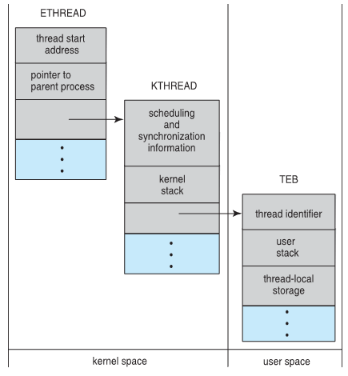
Linux：
Linux 将它们称为任务 tasks 而不是线程 threads
通过
clone()系统调用来完成线程创建，其允许子进程共享父进程的地址空间，flag 参数如下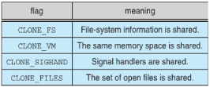
第 5 章 进程同步
操作系统提供什么样的手段 -> 便于程序员解决同步
程序员怎么样去利用操作系统提供的手段 -> 解决同步
目标：
- 介绍过程同步的概念。
- 引入临界段问题，该问题的解可用于保证共享数据的一致性
- 提出临界段问题的软硬件解决方案
- 研究几个经典的进程同步问题
- 探讨用于解决进程同步问题的几种工具
背景
- 进程可并发执行。可随时中断，部分完成
- 并发访问共享数据可能导致数据不一致性
- 维护数据一致性需要一些机制去确保执行的顺序
临界性问题：
- 每个进程有临界代码段：如改变共有变量、更新表、写文件等
- 需要保证同一时刻没有两个进程都在临界区
- 临界性问题即设计一种协议来解决该问题
- 每个进程在进入临界区的入口段 entry section 前申请权限，在退出区 exit section 前，归还权限
临界性的问题
Solution 的三个要求：
- 互相排斥 Mutual Exclusion —— 同一时刻没有两个进程都在临界区。（互斥也是一种同步）
- progress —— 没有进程在临界区，任一可立马进入
- 有限等待 bounded waiting —— 进程提出申请后，进程的等待是有限的
操作系统的临界区解决：
Peterson’s 解决方案
一个软件方法。符合三个要求
1 | do { |
忙式等待：自身时钟检测
非忙式等待：放弃检测，直接睡眠等待唤醒
同步硬件
- 许多系统为实现临界段代码提供硬件支持
- 基于 “锁” 的思想
- 单处理器 uniprocessors —— 可以禁用中断
- 当前正在运行的代码将在没有抢占的情况下执行
- 在多处理器系统上效率太低，使用关中断的 OS 无法广泛推广
- 现代机器提供特殊的原子 atomic 硬件指令
- atomic = non-interruptible
- 提供的指令：test memory、set value、swap
- 原语是不可打断，事务是可打断，但需要复原
原语在时间上是原子性的，事务在逻辑上是原子性，事务执行失败需要回退
test_and_set 指令：
1 | bool test_and_set(bool *target) |
利用 test_and_set 解决临界区问题：
1 | do { |
compare_and_swap 指令：
1 | int compare_and_swap(int *value, int expected, int new_value) |
利用 compare_and_swap 解决临界区问题：
1 | lock <- 0; |
利用 test_and_set 实现有限等待、互斥：
1 | do { |
互斥锁 Mutex Locks
- 先前的解决方案很复杂，通常程序员无法访问
- 操作系统的设计者设计了一种软件工具来解决临界区问题，最简单的即是 互斥锁
acquire()、release()的调用需要保证是原子性的- 这种解决方案是忙式等待，因此该锁被称为自旋锁 spinlockx
1 | acquire() { |
信号量 Semaphores
同步工具，为进程同步提供了比互斥锁更复杂的方法
Semaphore $S$ —— 一个整型数
wait()、signal()，最初称为P()、V()
1 | wait(S) { |
计数信号量 counting semaphore：整型取值
二进制信号量 binary semaphore：取值 0/1，与互斥锁相同
信号量 semaphores 使用：
1 | // 要求了执行顺序 P1->P2 |
- 没有两个进程可同时执行
wait()和signal()，关中断、放入临界区（硬件指令）可以实现
非忙式等待的实现：
- 每个信号量都有一个相关的等待队列
- 等待队列中的每个条目都有两个数据项
- 值、指向下一个记录的指针
- 两个操作
- 阻塞 block —— 把进程状态改变并将其放入等待队列
- 唤醒 wakeup —— 等待队列出队，入队就绪队列
1 | typedef struct { |
死锁 deadlock 和饥饿 starvation：
死锁：两个或多个进程无限期地等待一个事件，该事件只能由其中一个进程引起
饥饿：无限阻塞。进程可能永远不会从挂起它的信号量队列中删除
优先级反转 Priority Inversion：低优先级进程持有高优先级进程所需的锁时的调度问题
- 通过优先级继承协议解决
经典的同步问题
Bounded-Buffer Problem：
- 1 生产者，1 消费者，1 缓冲区
1 | /* |
- 1 生产者，1 消费者，k 缓冲区
1 | /* |
- m 生产者，n 消费者，k 缓冲区
1 | /* |
Readers and Writers Problem：
- 临界区的力度要小，否则并发就小了
1 | The writer process: |
Dining-Philosophers Problem：
围棋捡子问题
1 | while(1) { |
管程 Monitors
一种高级抽象，为进程同步提供方便有效的机制。高级的同步机制，自动实现了互斥
抽象数据类型 Abstract data type，内部变量只能由过程中的代码访问
一次只能在管程中激活一个进程，但还不足以对某些同步方案建模
1 | monitor monitor-name |
管程和信号量的区别
第 6 章 CPU 调度
目标：
- 介绍 CPU 调度，这是多程序操作系统的基础
- 描述各种 cpu 调度算法
- 讨论为特定系统选择 cpu 调度算法的评价准则
- 研究几种操作系统的调度算法
基本概念
通过多道程序设计获得的最大 CPU 利用率
CPU 调度程序：
1 和 4 的调度是非抢占的，2、3 调度是抢占的
分派程序 Dispatcher：
- 调度程序模块对短期调度程序选择的进程进行 CPU 控制，包括
- 上下文切换
- 切换成用户模式
- 跳转到用户程序中的适当位置来重新启动该程序
- 分派延时 dispatch latency —— 调度程序停止一个进程并启动另一个进程所需的时间，一种 overhead
调度原则 criteria
CPU 利用率 utilization —— 让 CPU 尽可能的忙
吞吐量 throughput —— 每个时间单元完成其执行的进程的数量
周转时间 turnaround time —— 执行特定流程的时间量，某个作业进入系统的时间和退出时间的差（等待时间+执行时间）
等待时间 waiting time —— 进程在就绪队列中等待的时间
响应时间 response time —— 从提交请求到生成第一个响应所花费的时间，不是输出 (对于分时环境)
调度算法
First- Come, First-Served (FCFS) Scheduling：
- 先来先服务
- 护航效果 convoy effect —— 长进程后的短进程
- 考虑一个 cpu 消耗型 和多个 I/O 消耗型进程
Shortest-Job-First (SJF) Scheduling：
- 平均等待时间最优
- 难点在于知道下一个 CPU 请求的耗时
- $t_n $ 为第 n 个 CPU burst 时间
$\tau {n+1} $ 为第 n+1 个 CPU burst 的预测时间
$ 0\le \alpha \le 1 $
$\tau{n+1} = \alpha t_n + (1-\alpha) \tau_{n}$
- $t_n $ 为第 n 个 CPU burst 时间
- 抢占式版本短作业优先称为 “最短剩余时间优先 shortest-remaining-time-first”
Priority Scheduling：
- 优先级编号 (整数) 与每个进程相关联，CPU 被分配给具有最高优先级的进程
- 分为抢占性、非抢占性
- 可能会饿死，解决方案是 aging —— 随时间增加优先级增大
高响应比优先调度算法：
$\large 响应比 = \frac{周转时间}{执行时间} = 1+ \frac{等待时间}{执行时间}$
同等情况下短作业优先
等待事件越长（先来先服务）优先级越高，不会出现饿死
Round Robin (RR) 轮转：
- 每个进程获得一小单位 CPU 时间 (时间片 quantum q )，通常为 10-100 毫秒。在此时间过后，进程被抢占并添加到就绪队列的末尾。
- 如果就绪队列中有 n 个进程，时间片为 q，那么每个进程一次最多可获得 q/n CPU时间。
- 利用每个时间片的定时器中断来调度下一个进程
- q 过大时 -> FIFO
- q 过小时 -> 上下文切换频繁
Multilevel Queue：
- 就绪队列被划分为单独的队列
- 前台队列 foreground (interactive 互动) —— 用 RR 算法
- 后台队列 background (batch 批处理) —— 用 FCFS 算法
- 调度必须在队列之间完成
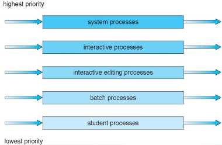
最早的分时系统：CTSS (1961)
Multilevel Feedback Queue 多级反馈队列：
- 进程可以在不同队列之间移动：老化可以通过这种方式实现
- 由以下参数定义的多级反馈队列调度程序
- 队列的数量
- 每个队列的调度算法
- 用于确定何时升级 upgrade 一个调度方法
- 用于确定何时降级 demote 一个调度方法
- 用于确定进程在该进程需要服务时将进入哪个队列
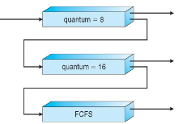
线程调度
多处理器调度
实时 CPU 调度 Real-Time
操作系统示例
算法的评估 Evaluation
第 7 章 死锁
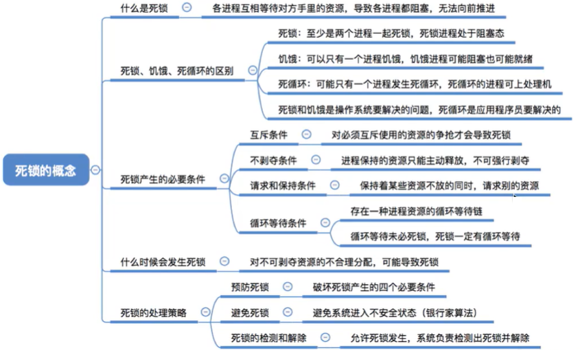
系统模型
- 资源类型：CPU 周期、内存空间、IO 设备
- 每个资源有类型 type 和 实例 instances
- 每个进程使用进程的方式
requestuserelease
死锁的特征
死锁所拥有的特征（其四大必要条件）：
- 互斥 Mutal exclusion ：同一时间一个资源只有一个进程在使用
- 持有和等待 Hold and wait：一个进程持有一个资源并等待其他进程持有的资源
- 不可抢占 No preemption：一个资源只能由持有它的进程在该进程完成其任务后自动释放。
- 环路等待 Circular wait：持有和等待关系成环（以哲学家就餐问题作例子）。同时也是个充分条件。
- 循环等待未必死锁，死锁必有循环等待
资源分配图 Resource-Allocation Graph (RAG)：
- 进程（圆圈）、资源类型（大方块）、资源实例（大方块内的小方块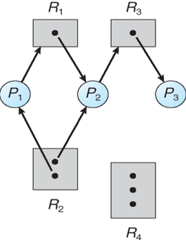 无死锁
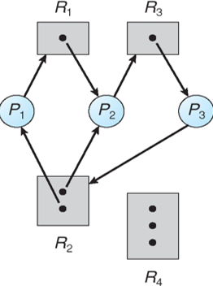 有死锁
处理死锁的方法
确保系统永远不会进入死锁状态：
- 死锁预防（采取防污染措施，禁止出现污染）：对资源的使用加上诸多限制条件，以防止系统出现死锁现象
- 死锁避免（根据环评结果，决定是否通过项目的审批）：基于进程及系统的一些先验知识，当进程申请资源时，若发现满足该资源的请求可能导致死锁发生，则拒绝该申请
- 死锁检测与恢复（先污染，后治理）：鸵鸟策略，放任污染，当环境无法居住时，地球生命灭绝，开始一个新的轮回
死锁预防 (静态策略)
破坏死锁产生的四个必要条件中的一个或几个
解决互斥：共享资源不需要互斥; 必须持有非共享资源。
解决持有等待（不剥夺条件）：必须确保每当进程请求资源时，它不包含任何其他资源。
- 占有不等待。
资源静态分配策略：流程在开始执行前请求并分配其所有资源。
一个进程的系统调用请求资源先于所有其他系统调用。 - 等待不占有（缺点是低利用率和可能饿死）。
当进程不拥有资源时才可申请资源；
进程使用完一种资源，才可以申请另一种资源
解决不可抢占
- 如果申请资源而未满足，则释放自己已经获得的资源；
将从其他进程剥夺的资源分配给其他等待该资源的进程 - 问题：进程只有在能够恢复其旧资源以及它所请求的新资源时才会重新启动。
- 适用于状态可保存及恢复的资源，如 CPU 和 内存
解决环路等待：
- 强制所有资源类型的总排序，并要求每个流程以递增的枚举顺序请求资源。
死锁避免 (动态策略)
要求系统具有一些附加的先验 a priori 信息：
- 最简单和最有用的模型要求每个流程声明它可能需要的每种类型的最大资源数量。
- 死锁避免算法动态检查资源分配状态，以确保不存在循环等待条件。
- 资源分配状态由可用资源和已分配资源的数量以及进程的最大需求来定义。
死锁检测和解除
第 8 章 内存管理
目标：
- 提供记忆体硬体的各种组织方式的详细描述
- 讨论各种内存管理技术，包括分页和分段
- 提供英特尔奔腾的详细描述，它支持纯分割和分页分割
背景
- 必须将程序 (从磁盘) 放入内存，并将其放置在进程中才能运行
- 主存和寄存器是 CPU 只能直接访问的存储
- 寄存器访问较主存块
- 缓存位于主存和 CPU 寄存器之间
- 内存的保护需要确保操作的正确性
一对 base 寄存器和 limit 寄存器定义逻辑地址空间